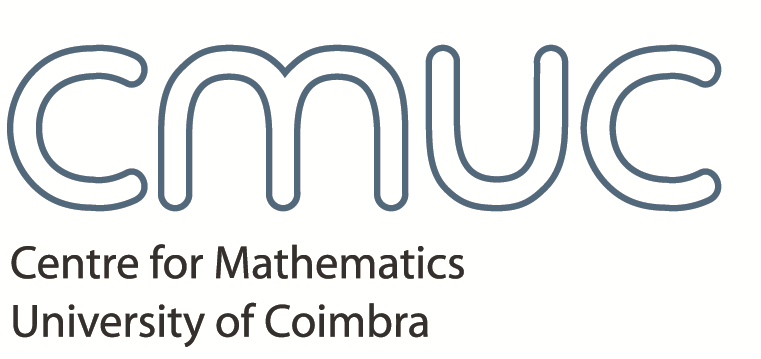
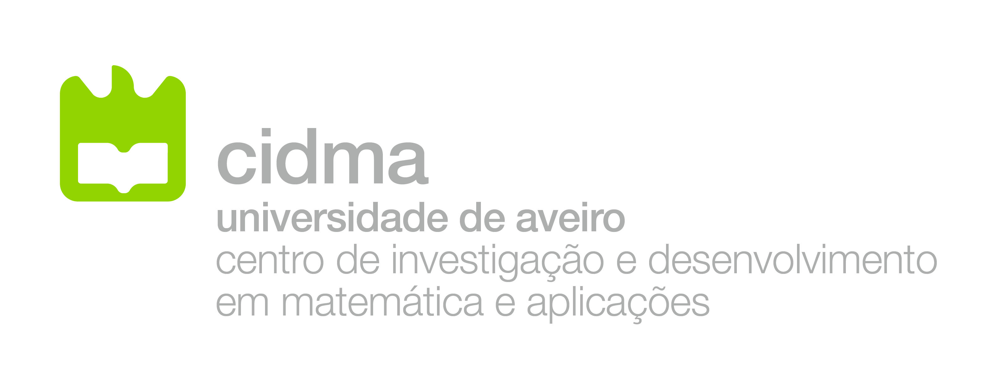
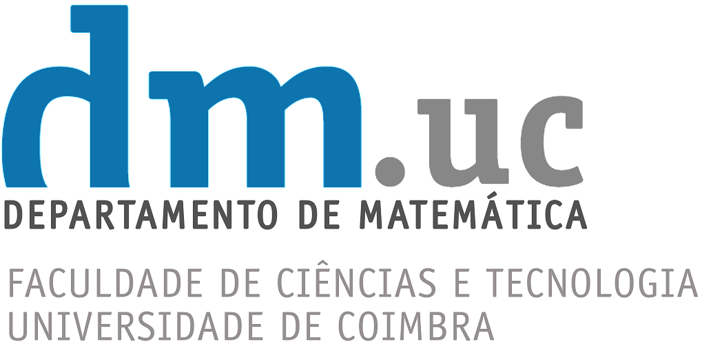
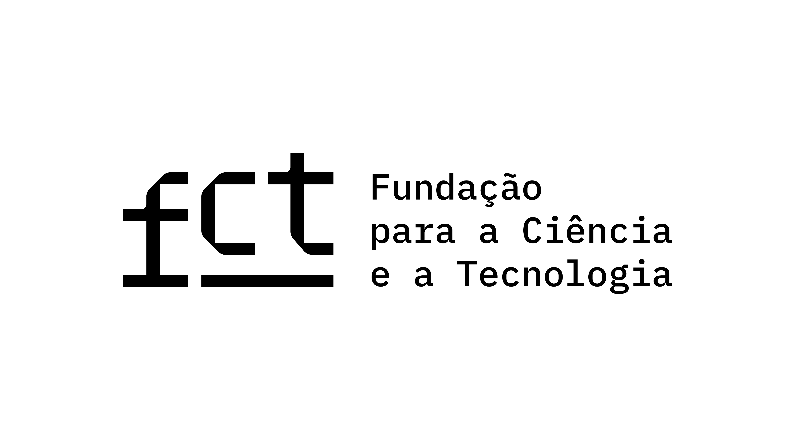
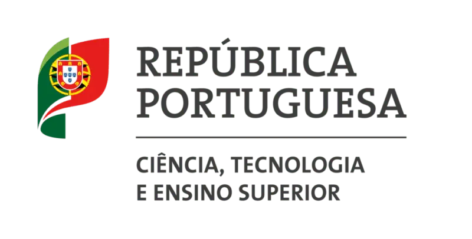

About
The seminar is devoted to category theory and its connections with algebra, topology, logic and computer science. Researchers and students are welcome.
Key dates
- Abstracts
- Decisions by
- Registration
All dates in 2026. Deadlines: 23:59, Coimbra time.
Registration & abstracts
Registration is free. Please send the completed form to Maria Manuel Clementino in the body of your email.
- Subject
PCS-2026 SUBMISSION
If you would like to give a talk, please use the template below and attach both the .tex source and the compiled .pdf of your abstract to the same email. No attachments are needed if you are registering without a talk.
Abstract template: LaTeXPDFZIP
For Subject area, enter a subject area that best describes your abstract, in your own words. There is no fixed list of subject areas.
Form to copy into your email
Full name: Affiliation: Contact email: Website: Submitting a talk? Yes / No If Yes: Talk title: Subject area: Keywords: MSC2020 (optional): Saturday lunch? Yes / Yes + 1 / No Dietary restrictions: May we publish your name and affiliation? Yes / NoDownload the text form
Participants make their own lunch arrangements on Thursday and Friday. There will be an optional lunch on Saturday, paid for by participants. We have listed some places for Friday lunch near the Department.
Programme
View programme · To be announced.
Participants
| Participant | Affiliation |
|---|---|
| Amir Homayoun Nejah | Shahid Beheshti University, Iran |
| Arnaud Duvieusart | UCLouvain; F.R.S.–FNRS, Belgium |
| Daniel Altman | UCLouvain, Belgium |
| David Forsman | UCLouvain, Belgium |
| David Quiroga Gutiérrez | University of Santiago de Compostela, Spain |
| Diana Rodelo | University of Algarve; CIDMA, University of Aveiro, Portugal |
| Dirk Hofmann | CIDMA, University of Aveiro, Portugal |
| Fernando Lucatelli Nunes | CMUC, University of Coimbra, Portugal |
| Gabriel Saadia | Stockholm University, Sweden |
| Gonçalo Gutierres | CMUC, University of Coimbra, Portugal |
| Idir Maguenine | Université Paris Cité, France |
| Jana K. Nickel | University of Hamburg, Germany |
| João José Neves Silva Xarez | University of Aveiro, Portugal |
| Jorge Picado | CMUC, University of Coimbra, Portugal |
| Logan Geenis | UCLouvain, Belgium |
| Lurdes Sousa | Polytechnic University of Viseu; CMUC, University of Coimbra, Portugal |
| Luzía Méndez Senra | CITMAga, University of Santiago de Compostela, Spain |
| Makar Morozov | University of Coimbra, Portugal |
| Manuela Sobral | CMUC, University of Coimbra, Portugal |
| Marco Abbadini | UCLouvain, Belgium |
| Maria Bevilacqua | UCLouvain, Belgium |
| Maria Manuel Clementino | CMUC, University of Coimbra, Portugal |
| Marino Gran | UCLouvain, Belgium |
| Néot Choserot | CMUC, University of Coimbra, Portugal |
| Norihiro Yamada | CMUC, University of Coimbra, Portugal |
| Ony Aubril | UCLouvain, Belgium |
| Paolo Perrone | University of Oxford, United Kingdom |
| Pouya Partow | University of Birmingham, United Kingdom |
| Renato Neves | University of Minho, Portugal |
| Rodrigo Alves | University of Aveiro; University of Porto, Portugal |
| Rui Prezado | CMUC, University of Coimbra, Portugal |
| Sandra Pinto | CMUC, University of Coimbra, Portugal |
| Tim Van der Linden | F.R.S.–FNRS; UCLouvain; Vrije Universiteit Brussel, Belgium |
| Violeta Borges Marques | University of Hamburg, Germany |
| Xabier García Martínez | CITMAga, University of Santiago de Compostela, Spain |
Practical Information
The practical information page has directions to Coimbra and the Department, suggestions for accommodation and lunch, and places to visit in the city and surrounding area.
TrainsCoachesLocal transportThe venueHotels & AirbnbFriday lunchExplore CoimbraNature walks & valleysBeaches & excursions
Organisers




